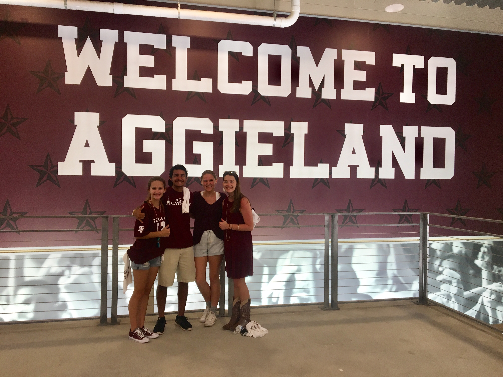
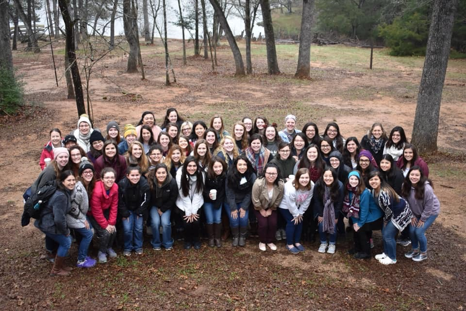
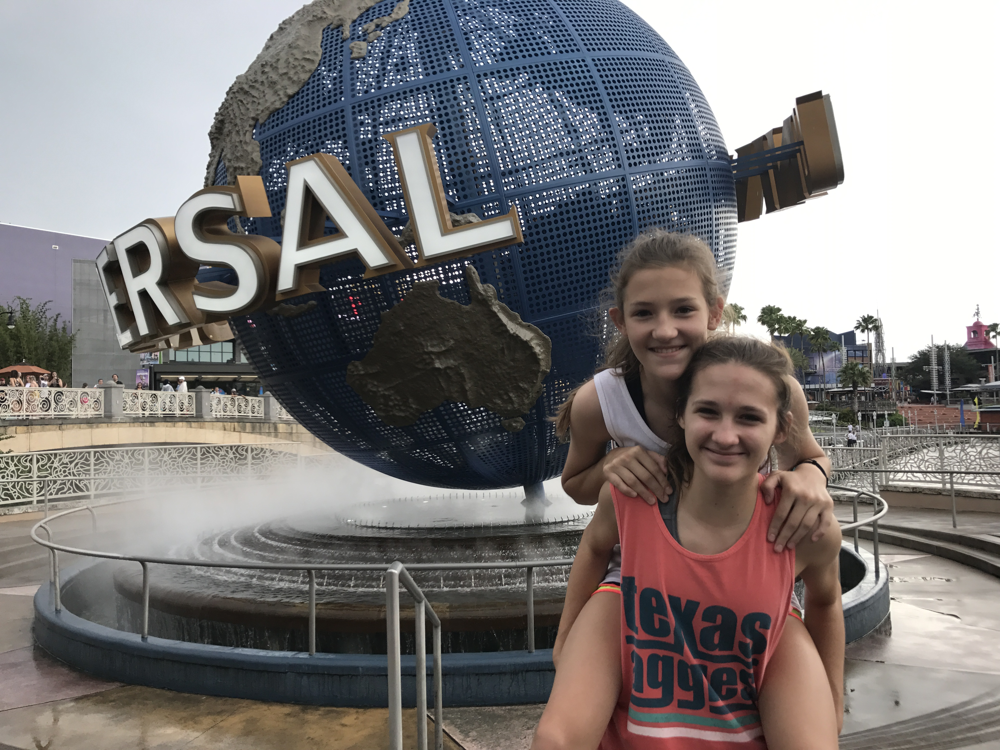
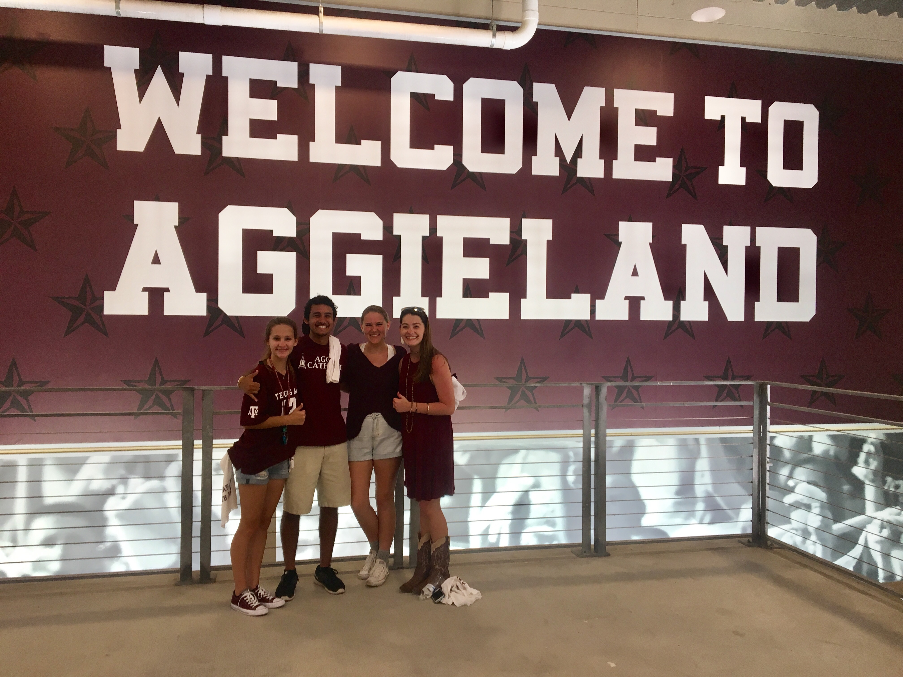
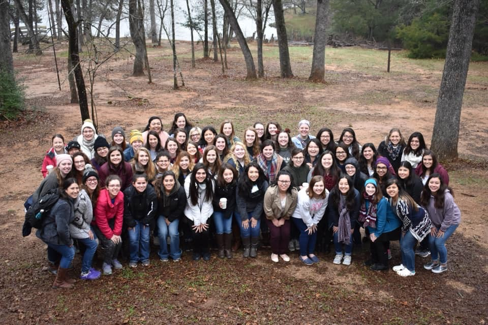
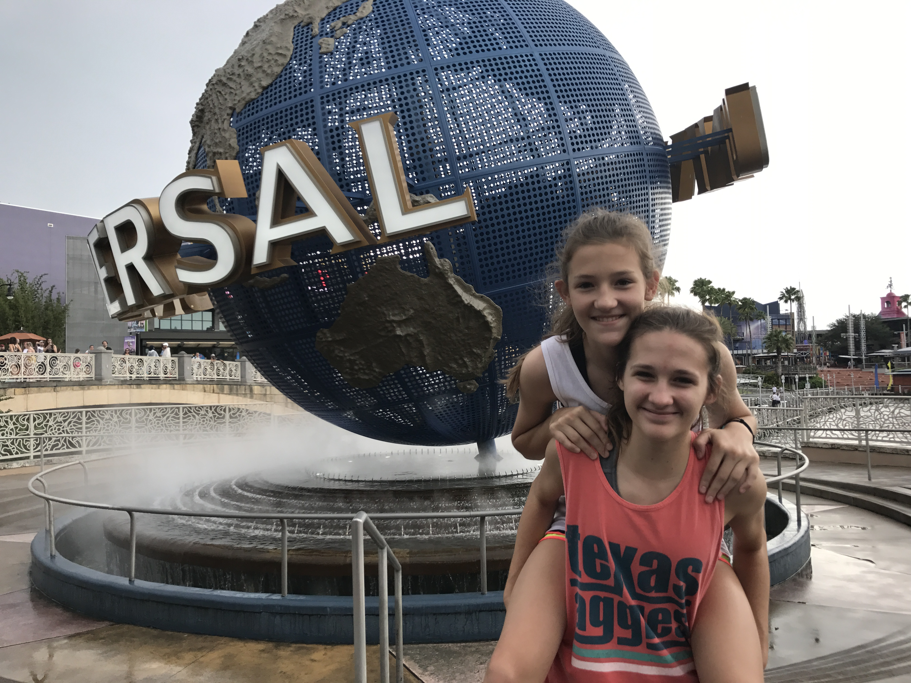
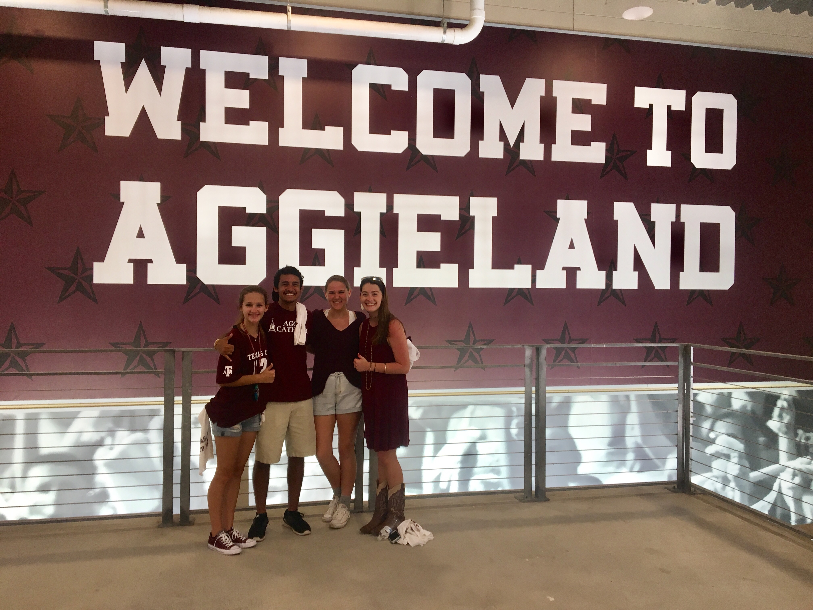
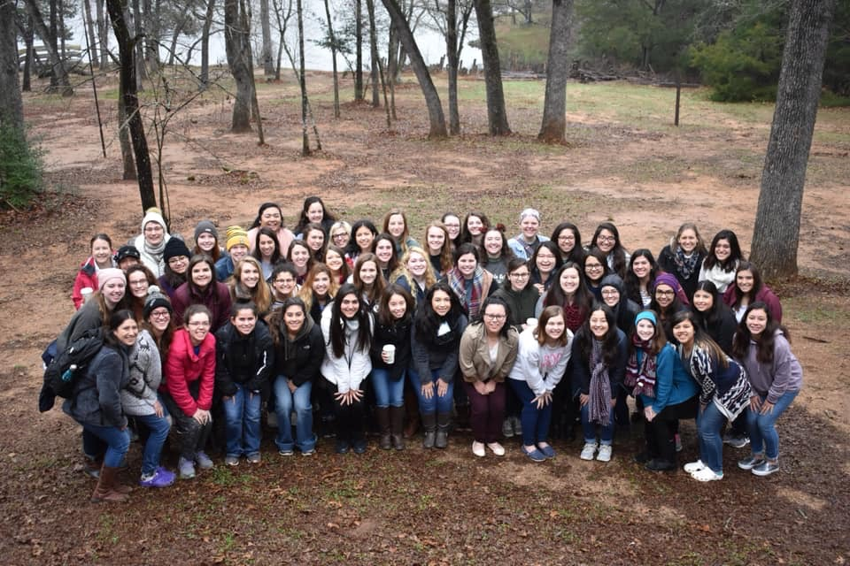
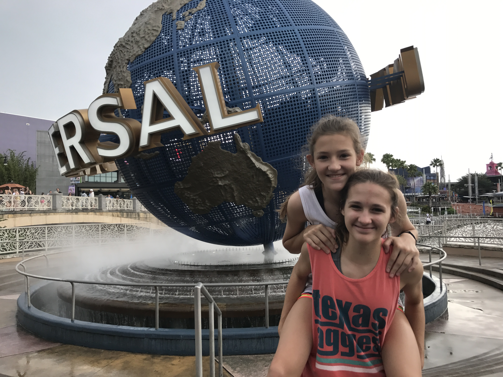

Howdy! My name is Hanna Mitschke and I am currently a senior at Texas A&M University. I am expecting to graduate in May 2021 with a Bachelor of Science in Computer Science and with minors in Business and Cybersecurity. I am still considering graduate school once I get my bachelor's degree. I am from Friendswood, TX and I have lived there all my life with my two siblings and our beagle. My hobbies include playing video games, watching TV, and going to the beach in the summer. We have been going to the beach almost every year for my birthday since I was young and it is always a trip I look forward to. I also really love volleyball, which I have been playing since the 3rd grade. I have even done both sand and indoor intramural volleyball at A&M. I enjoy hanging out and playing board games with my family and friends too. I am really close to my younger sister; she is one of my best friends and we have really similar interests and personalities.
One of the school organizations I am a part of at A&M is the Society of Women Engineers (SWE). I really love being a part of this organization because for our meetings, women, often alumni from A&M, that work for distinguished engineering companies come and tell us about their company and what they do there. It is a great opportunity to truly learn what that company is about, ask questions, and be able to network with them. SWE also has many events and programs focused on helping its members succeed academically and professionally. Another organization that I am a part of is Aggie Women in Computer Science (AWiCS), whose mission is to further computer science women by hosting workshops, events, and meetings, and various companies attend many of these events as well. Kappa Theta Beta (KTB), which stands for Catholic Daughters of the King, is another organization that I am in. It is a sorority at my church, St. Mary's Catholic Church. KTB's pillars are sisterhood, spirituality, and service. I love being involved in KTB and I have already met so many amazing girls while being able to grow in my faith. I have been on a few retreats so far that were all amazing, and I have also participated in bible studies and many different service and sisterhood events.
Since August 2019, I have been a computer science peer teacher for Texas A&M due to my previous excellence in lower level computer science courses. I love being able to use this leadership role to help other college students learn about computer science. I always find it really fulfilling to help another person gain a deeper understanding of something, and the fact that the topic I get to help others with is computer science, something that I really adore and find fun, is an amazing opportunity. This position also allows me to improve my debugging skills and further develop my verbal and technical communication skills. Recently, I helped to create a web app for the computer science peer teacher program that will be used to display the currently working peer teachers during office hours. I loved being able to help create this web app since I am a peer teacher myself, and I am excited to see it in use!
I have also started working as an undergraduate teaching assistant as of August 2020. I am a TA for a class that I used to peer teach for, and I was selected for this position because the previous TAs thought that I was really helpful as a peer teacher. The class is made up of predominately non-computer science students, which is one of the ways that makes the role different than my peer teacher role, and is also one of the ways it makes the TA role more exciting. My hope is that we can get the students to love computer science so much that they decide to change their major, or at least pick up a computer science minor! I help to lead and facilitate labs twice a week and answer student's questions. In addition, I work closely with 12 other TAs and the professor to help with course setup and grading. I am also solely responsible for the creation, editing, and use of some Python scripts that have been used to automate some class functions. One of these, which another person wrote the majority of, is an attendance tracker. Since lectures moved online for the Fall 2020 and Spring 2021 semesters, I use this script and the Zoom attendance reports to keep track of who was logged into the Zoom lecture for long enough time period, which can be set in the script. We have also started using polls during the Zoom lectures to make sure students are paying attention, so I edited this script to use the poll reports to take away credit from a student if they didn't answer the poll. Another script that I made is a random student generator, which is a Python notebook that creates a GUI for the professor to use during class. The idea is that the professor can use this to generate a random student to call on during lecture and award participation points in order to make sure people are paying attention and staying engaged.


